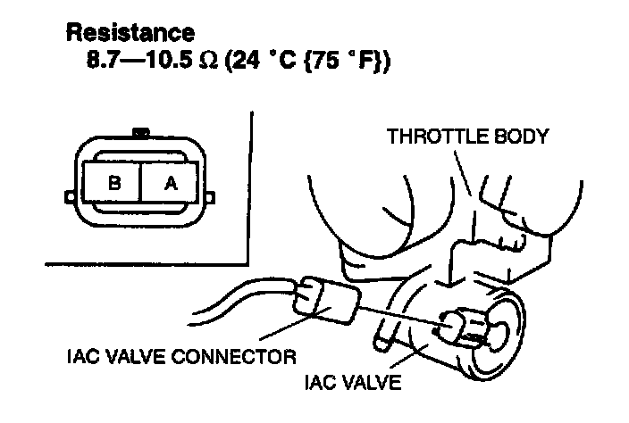

Auxiliary Air Valve (Idle Speed): Testing and Inspection
IDLE AIR CONTROL VALVE INSPECTIONSimulation Test
1. Carry out the "Idle Air Control Inspection".
2. If not as specified, perform the further inspection for the IAC valve.
Resistance Inspection
NOTE:
- Perform the following test only when directed.
1. Disconnect the negative battery cable.
2. Disconnect the AC valve connector.

3. Measure the resistance between the IAC valve terminals by using an ohmmeter.
4. If not as specified, replace the IAC valve. If as specified but the Simulation Test is failed, inspect following:
Open circuit
- Power circuit (IAC valve connector terminal A and PCM connector terminal 3M.)
- Ground circuit (IAC valve connector terminal B and PCM connector terminal 30.)
Short circuit
- IAC valve connector terminal A and PCM connector terminal 3M to ground.
5. Remove the IAC valve, and inspect for any damage or clogging. Replace the IAC valve if not as specified.